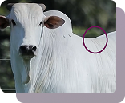
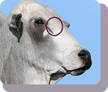
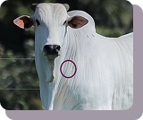

INSTRUÇÕES
1
Anexe o polo central nas costas do animal

2
Anexe o polo de temperatura na região indicada

3
Anexe o polo de vocalização na região indicada

4
Efetue a conexão bluetooth do polo central com seu dispositivo móvel por meio do aplicativo BOVTRACK
5
Faça o registro de seus animais inserindo as informações necessárias e acompanhe seus dados de temperatura e vocalização remotamente